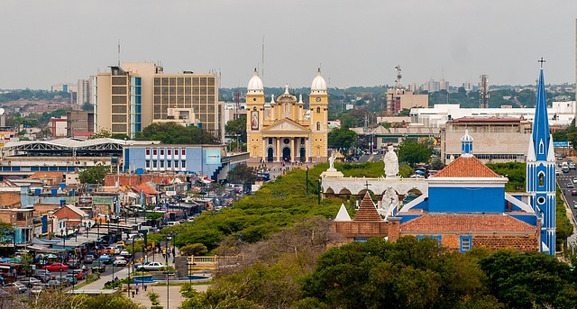

Maracaibo is a Venezuelan city, the capital of Zulia State, located in northwestern Venezuela. It is the second most populous city in Venezuela and the most important economic center in the western part of the country, due to the oil industry that has developed on the shores of Lake Maracaibo, specifically in its northwestern sector.
Maracaibo has interesting features, such as Lake Maracaibo being the only freshwater lake in the world with a direct connection to the sea, and the city was a pioneer in public services like electricity in Venezuela. It is the birthplace of the gaita zuliana, a Christmas musical genre, and was Venezuela's first financial center due to its oil wealth.
